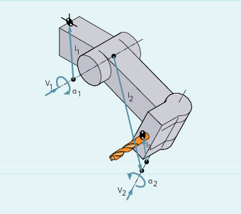
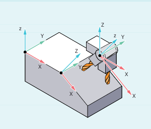

A toolholder can only orientate a tool in all possible directions in space if
Two rotary axes V1 and V2 are present.
The rotary axes are mutually orthogonal.
The tool longitudinal axis is perpendicular to the second rotary axis V2.
In addition, the following requirement is applicable to machines for which all possible orientations have to be settable:
The tool longitudinal axis must be perpendicular to the first rotary axis V1.
The toolholder kinematics with a maximum of two rotary axes v1 or v2 are defined using the 17 system variables $TC_CARR1[m] to $TC_CARR17[m]. The description of the toolholder consists of:
The vectoral distance from the first rotary axis of the toolholder I1, the vectoral distance from the first rotary axis to the second rotary axis I2, the vectoral distance from the second rotary axis to the reference point of the tool I3.
The direction vectors of both rotary axes V1, V2.
The angles of rotation α1, α2 around the two axes. The rotation angles are counted in viewing direction of the rotary axis vectors, positive, in clockwise direction of rotation.
For machines with resolved kinematics (both the tool and the part can rotate), the system variables have been extended with the entries $TC_CARR18[m] to $TC_CARR23[m].
Function of the system variables for orientable toolholders | |||
|---|---|---|---|
Designation | x component | y component | z component |
l1 offset vector | $TC_CARR1[m] | $TC_CARR2[m] | $TC_CARR3[m] |
l2 offset vector | $TC_CARR4[m] | $TC_CARR5[m] | $TC_CARR6[m] |
v1 rotary axis | $TC_CARR7[m] | $TC_CARR8[m] | $TC_CARR9[m] |
v2 rotary axis | $TC_CARR10[m] | $TC_CARR11[m] | $TC_CARR12[m] |
α1 angle of rotation | $TC_CARR13[m] | ||
l3 offset vector | $TC_CARR15[m] | $TC_CARR16[m] | $TC_CARR17[m] |
Extensions of the system variables for orientable toolholders | |||
|---|---|---|---|
Designation | x component | y component | z component |
l4 offset vector | $TC_CARR18[m] | $TC_CARR19[m] | $TC_CARR20[m] |
Axis identifier Rotary axis v1 | Axis identifier of the rotary axes v1 and v2 (initialized with zero) | ||
Kinematic type Tool | $TC_CARR23[m] | ||
Kinematics type T -> | Kinematics type P -> | Kinematics type M | |
Only the tool can rotate (default). | Only the part can rotate | Part and tool can rotate | |
Offset of the | Angle in degrees of the rotary axes v1 and v2 on assuming the initial setting | ||
Angle offset of the rotary axis v1 | Offset of the Hirth tooth system in degrees for rotary axes v1 and v2 | ||
Angle increment | Offset of the Hirth tooth system in degrees for rotary axes v1 and v2 | ||
Min. position Rotary axis v1 | Software limit for the minimum position of the rotary axes v1 and v2 | ||
Max. position Rotary axis v1 | Software limits for the maximum position of the rotary axes v1 and v2 | ||
Toolholder name | A toolholder can be given a name instead of a number. $TC_CARR34[m] | ||
User: Position | Intended use in user measuring cycles $TC_CARR35[m] | ||
$TC_CARR38[m] | $TC_CARR39[m] | $TC_CARR40[m] | |
Fine | Parameters that can be added to the values | ||
l1 offset vector | $TC_CARR41[m] | $TC_CARR42[m] | $TC_CARR43[m] |
l2 offset vector | $TC_CARR44[m] | $TC_CARR45[m] | $TC_CARR46[m] |
l3 offset vector | $TC_CARR55[m] | $TC_CARR56[m] | $TC_CARR57[m] |
l4 offset vector | $TC_CARR58[m] | $TC_CARR59[m] | $TC_CARR60[m] |
v1 rotary axis | $TC_CARR64[m] | ||
v2 rotary axis | $TC_CARR65[m] | ||
| Note |
Explanations of parameters"m" specifies the number of the toolholder to be programmed. $TC_CARR47 to $TC_CARR54 and $TC_CARR61 to $TC_CARR63 are not defined and produce an alarm if read or write access is attempted. The start/end points of the distance vectors on the axes can be freely selected. The rotation angles Toolholders with only one or no rotary axis at all can be described by setting the direction vectors of one or both rotary axes to zero. |
The system variables have been extended by the entries $TC_CARR24[m] to $TC_CARR33[m] and described as follows:
Offset of rotary axes v1, v2 | Changing the position of the rotary axis v1 or v2 for the initial setting of the oriented toolholder. |
The angle offset/angle increment of the rotary axes v1, v2 | The offset or the angle increment of the Hirth tooth system of the rotary axes v1 and v2. Programmed or calculated angle is rounded up to the next value that results from phi = s + n * d when n is an integer. |
The minimum and maximum position of the rotary axes v1, v2 | The minimum and maximum position of the rotary axis limit angle (software limit) of the rotary axes v1 and v2. |
$TC_CARR34 to $TC_CARR40 contain parameters that are freely available to users and up to SW 6.4 were as standard, not further evaluated within the NCK or had no significance.
$TC_CARR41 to $TC_CARR65 include fine offset parameters that can be added to the values in the basis parameters. The fine offset value assigned to a basic parameter is obtained when the value 40 is added to the parameter number.
The toolholder used in the following example can be fully described by a rotation around the Y axis.
| Program code | Comment |
|---|---|
| N10 $TC_CARR8[1]=1 | ; Definition of the Y component of the first rotary axis of toolholder 1. |
| N20 $TC_DP1[1,1] = 120 | ; Definition of a shaft miller. |
| N30 $TC_DP3[1,1]=20 | ; Definition of a shaft miller, 20 mm long. |
| N40 $TC_DP6[1,1]=5 | ; Definition of a shaft miller with 5 mm radius. |
| N50 ROT Y37 | ; Frame definition with 37° rotation around the Y axis. |
| N60 X0 Y0 Z0 F10000 | ; Approach start position. |
| N70 G42 CUT2DF TCOFR TCARR=1 T1 D1 X10 | Set radius compensation, tool length compensation in rotated frame, select toolholder 1, tool 1. |
| N80 X40 | ; Perform machining under a rotation of 37°. |
| N90 Y40 | |
| N100 X0 | |
| N110 Y0 | |
| N120 M30 |